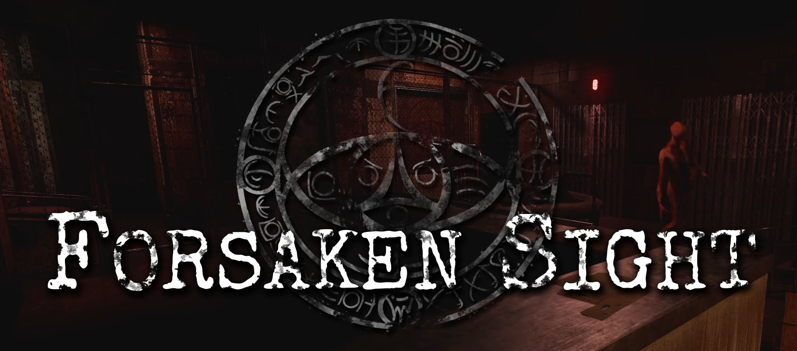

Projet
Synopsis
Jeu d’horreur psychologique narratif, incorporant de l’exploration, de la furtivité et des énigmes. En tant que Catherine, une jeune anthropologue perdue dans un univers surréaliste, vous devez naviguer un monde de cauchemars pour découvrir la vérité derrière un mal ancestral et vous-même.
Forsaken Sight est un projet de jeu vidéo sur lequel je travaille au sein de Mindcasters Studio, studio dont je suis co-fondateur et co-propriétaire. Sur ce titre, j’assume notamment le rôle de programmeur et de compositeur de musique.
Teaser

Studio
Mindcasters Studio — co-création et co-direction avec une équipe dédiée au développement de jeux. Ma contribution porte notamment sur la programmation et la bande sonore.